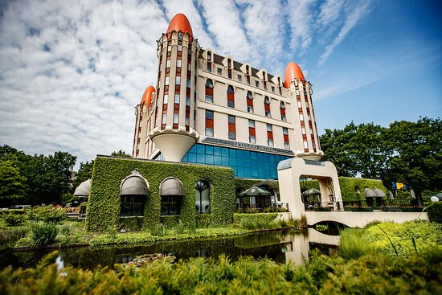
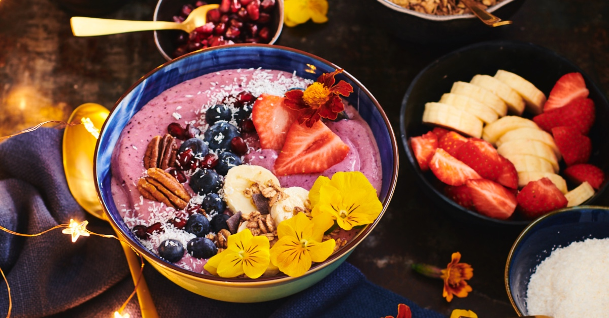

Vijf feitjes over Tilburg:
- Tilburg is 211 jaar oud.
- De Tilburgse Kermis bestond al in 1567.
- De Japanse multinational Fuji koos Tilburg als vestigingsplaats.
- Cinecitta is de oude nog bestaande bioscoop in Tilburg.
- De geschiedenis van het koken in Tilburg en de Tilburgse keuken wordt behandeld in ' Tilburgs Kookbuukske'.
Attractiepark Efteling:
1. Efteling Evenementen:
Een evenement in de meest unieke omgeving die u zich maar kunt voorstellen: de Efteling. Dat wordt een dag die u niet snel zal vergeten!
Van familiedag tot bedrijfsfeest in combinatie met parkbezoek, uw evenement zorgt gegarandeerd voor een blijvende herinnering. Wilt u het echt ‘groots’ aanpakken? Reserveer de Efteling dan in de avond voor een unieke beleving, of organiseer een Reuzenfeest waarbij uw gasten de Efteling geheel of gedeeltelijk voor zichzelf hebben. Zo maakt u grote én kleine mensen blij!.
2. Efteling - Eten en Drinken:
Bij de ontwikkeling van het horeca-assortiment van de Efteling houden we rekening met de verschillende wensen van de gast. Zo is er in praktisch elke horecalocatie inmiddels een divers aanbod aan veganistische maaltijden en snacks. Van een heerlijke gegrilde vegan soja-paprikaburger tot een vega broodje Unox. We doen ons best om dit aanbod steeds uit te breiden.